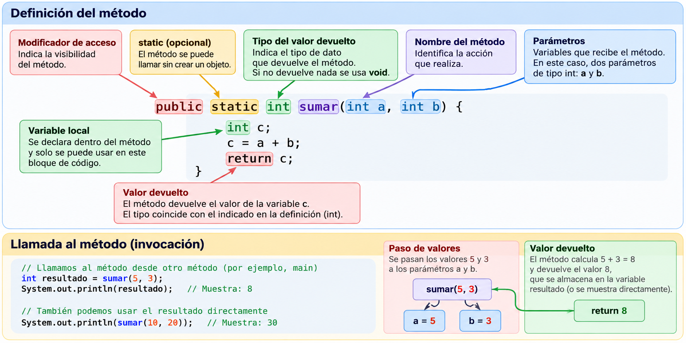

Creación de métodos¶
Los métodos son bloques de código definidos dentro de una clase que realizan una tarea concreta. Permiten dividir un problema en partes pequeñas, reutilizar código y facilitar su lectura, prueba y mantenimiento. Esta forma de organizar el programa es fundamental en la programación modular.
Hasta ahora hemos utilizado el método main(), que es el punto de entrada de nuestros programas. A continuación aprenderemos a crear e invocar nuestros propios métodos.
Funciones y métodos: conceptos fundamentales¶
En programación, una función es un bloque reutilizable de instrucciones que realiza una operación. Puede recibir datos de entrada y producir un resultado. En muchos lenguajes existen funciones independientes; en Java los métodos se declaran dentro de clases, interfaces u otros tipos que los admiten. Por eso, cuando hablamos informalmente de «funciones en Java», normalmente nos referimos a métodos.
| Concepto | Significado | Ejemplo en Java |
|---|---|---|
| Función | Concepto general: operación reutilizable | Calcular el área de un círculo |
| Método | Operación declarada como miembro de un tipo Java | public static int sumar(int a, int b) |
| Método de instancia | Trabaja sobre un objeto concreto | alumno.mostrarDatos() |
| Método estático | Se invoca mediante la clase, sin crear un objeto | Math.sqrt(25) |
| Constructor | Inicializa un objeto al crearlo; no es un método | new Alumno("Ana", 18) |
Terminología en clase
Podemos hablar de «crear una función» para introducir la programación modular, pero en el código Java estaremos declarando un método. Tampoco debe confundirse «no devolver nada» (void) con «no mostrar nada»: un método puede imprimir en pantalla y no devolver ningún valor.
¿Cómo se crea y utiliza una función en Java?¶
- Definir la tarea: por ejemplo, calcular el doble de un número.
- Elegir el nombre y los parámetros:
calcularDoble(int numero). - Elegir el tipo de retorno:
int. - Escribir el cuerpo y devolver el resultado con
return. - Invocar el método desde
mainy utilizar el valor devuelto.
public class Main {
public static void main(String[] args) {
int resultado = calcularDoble(7); // 7 es el argumento
System.out.println("El doble es: " + resultado);
}
/**
* Calcula el doble de un número entero.
* @param numero número que se desea duplicar
* @return el doble del número recibido
*/
public static int calcularDoble(int numero) {
return numero * 2;
}
}
Salida: El doble es: 14.
Cuatro combinaciones habituales¶
| Parámetros | Retorno | Declaración | Uso |
|---|---|---|---|
| No | No | static void saludar() |
saludar(); |
| Sí | No | static void saludar(String nombre) |
saludar("Ana"); |
| No | Sí | static int obtenerDiez() |
int n = obtenerDiez(); |
| Sí | Sí | static int sumar(int a, int b) |
int n = sumar(2, 3); |
public class EjemplosFunciones {
public static void saludar() {
System.out.println("Hola");
}
public static void saludar(String nombre) {
System.out.println("Hola, " + nombre);
}
public static int obtenerDiez() {
return 10;
}
public static int sumar(int a, int b) {
return a + b;
}
public static void main(String[] args) {
saludar();
saludar("Ana");
System.out.println(obtenerDiez());
System.out.println(sumar(2, 3));
}
}
Parámetros, argumentos y variables locales¶
- Parámetro: variable declarada en la cabecera del método, como
int a. - Argumento: expresión proporcionada al llamar al método, como
8. - Variable local: se declara dentro de un método y solo existe en su ámbito.
- Paso de argumentos: Java siempre pasa por valor. Para tipos primitivos se copia el valor; para objetos se copia el valor de la referencia, por lo que el método puede modificar el estado del objeto recibido, pero reasignar su parámetro no cambia la referencia del llamador.
public class PasoPorValor {
public static void incrementar(int numero) {
numero++;
System.out.println("Dentro: " + numero);
}
public static void main(String[] args) {
int edad = 18;
incrementar(edad);
System.out.println("Fuera: " + edad);
}
}
Salida: Dentro: 19 y Fuera: 18. La variable edad no cambia.
return no es System.out.println()¶
public static void mostrarSuma(int a, int b) {
System.out.println(a + b); // Muestra, pero no devuelve
}
public static int calcularSuma(int a, int b) {
return a + b; // Devuelve para reutilizar el resultado
}
En un programa real, separar cálculo y presentación facilita las pruebas y la reutilización. No se puede asignar el resultado de mostrarSuma(2, 3) a una variable int porque su retorno es void.
Estructura de un método¶
[modificadorAcceso] [static] tipoRetorno nombreMetodo(tipo parametro1, tipo parametro2) {
// Instrucciones
return valor; // Solo si el método devuelve un valor
}
| Elemento | Descripción | Ejemplo |
|---|---|---|
| Modificador de acceso | Determina desde dónde puede utilizarse | public, private |
static |
Permite llamar al método desde la clase sin crear un objeto | public static int sumar(...) |
| Tipo de retorno | Tipo del resultado; void si no devuelve nada |
int, double, boolean, void |
| Nombre | Se escribe normalmente en lowerCamelCase |
calcularMedia |
| Parámetros | Datos que recibe el método; pueden omitirse | int a, int b |
return |
Devuelve el resultado y termina la ejecución del método | return a + b; |


Importante
Los métodos se declaran dentro de una clase, pero fuera de otros métodos. En Java no se puede definir un método dentro de main() ni dentro de otro método.
Primer ejemplo: método sin parámetros ni retorno¶
Un método void ejecuta instrucciones, pero no devuelve un resultado al código que lo invoca.
public class Main {
public static void main(String[] args) {
mostrarSaludo();
mostrarSaludo();
}
public static void mostrarSaludo() {
System.out.println("Bienvenido a Programación");
}
}
Salida:
Bienvenido a Programación
Bienvenido a Programación
mostrarSaludo() se invoca dos veces, sin duplicar las instrucciones que imprimen el mensaje.
Métodos con parámetros¶
Los parámetros son variables declaradas en la cabecera del método. Los argumentos son los valores que proporcionamos al invocarlo.
public class Main {
public static void main(String[] args) {
saludar("Laura");
saludar("Carlos");
}
public static void saludar(String nombre) {
System.out.println("Hola, " + nombre);
}
}
Salida:
Hola, Laura
Hola, Carlos
En saludar(String nombre), nombre es el parámetro; "Laura" y "Carlos" son argumentos de las llamadas.
Métodos que devuelven valores: return¶
Cuando el método devuelve un valor, indicamos su tipo de retorno. El resultado puede guardarse en una variable o utilizarse directamente en una expresión.
public class Main {
public static void main(String[] args) {
int resultado = sumar(8, 5);
System.out.println("Suma: " + resultado);
System.out.println("Otra suma: " + sumar(10, 20));
}
public static int sumar(int a, int b) {
return a + b;
}
}
Salida:
Suma: 13
Otra suma: 30
La instrucción return
return termina inmediatamente la ejecución del método. En un método que devuelve int, todas las rutas de ejecución deben devolver un int o terminar de otra manera válida, por ejemplo lanzando una excepción. Un método void puede usar return; para terminar anticipadamente.
Ejemplo completo: calcular la puntuación de un juego¶
Este ejemplo conserva el cálculo de puntuación del tema original. El método recibe cuatro parámetros y devuelve -1 si la partida no ha terminado.
public class Main {
public static void main(String[] args) {
boolean gameOver = true;
int puntuacion = 5000;
int nivelCompletado = 5;
int bonus = 10;
int score = calcularPuntuacion(gameOver, puntuacion, nivelCompletado, bonus);
System.out.println("Puntuación: " + score);
score = calcularPuntuacion(true, 1000, 10, 30);
System.out.println("Puntuación: " + score);
System.out.println("Partida en curso: " +
calcularPuntuacion(false, 1000, 2, 10));
}
public static int calcularPuntuacion(boolean gameOver, int puntuacion,
int nivelCompletado, int bonus) {
if (gameOver) {
int puntuacionFinal = puntuacion + nivelCompletado * bonus;
puntuacionFinal += 100;
return puntuacionFinal;
}
return -1;
}
}
Salida:
Puntuación: 5150
Puntuación: 1400
Partida en curso: -1
Otra forma de escribir el mismo método¶
Podemos utilizar una única instrucción return al final. Es una alternativa de estilo, no necesariamente más eficiente.
public static int calcularPuntuacion(boolean gameOver, int puntuacion,
int nivelCompletado, int bonus) {
int puntuacionFinal = -1;
if (gameOver) {
puntuacionFinal = puntuacion + nivelCompletado * bonus + 100;
}
return puntuacionFinal;
}
No duplicar métodos
Estas dos versiones son alternativas: no pueden declararse juntas en la misma clase con idéntico nombre y tipos de parámetros, porque Java consideraría que tienen la misma firma.
Métodos static y métodos de instancia¶
En Java todos estos bloques se llaman métodos, tanto si llevan static como si no. Los métodos static pertenecen a la clase y pueden llamarse sin crear objetos; los métodos de instancia se invocan sobre un objeto.
public class Calculadora {
public static int sumar(int a, int b) {
return a + b;
}
public int multiplicar(int a, int b) {
return a * b;
}
}
Desde otra clase:
public class Main {
public static void main(String[] args) {
System.out.println(Calculadora.sumar(3, 4));
Calculadora calculadora = new Calculadora();
System.out.println(calculadora.multiplicar(3, 4));
}
}
Salida:
7
12
Para empezar
En los primeros ejercicios de programación modular utilizaremos principalmente métodos static, para invocarlos directamente desde main(). Más adelante trabajaremos con métodos de instancia al profundizar en la programación orientada a objetos.
Métodos y objetos en programación orientada a objetos¶
Una clase define atributos (datos) y métodos (comportamientos). Un objeto es una instancia de esa clase, con su propio estado. Los métodos de instancia pueden leer y modificar ese estado.
Ejemplo: clase Coche¶
Archivo Coche.java:
public class Coche {
private String marca;
private String modelo;
private int velocidad;
/** Inicializa un coche con marca y modelo. */
public Coche(String marca, String modelo) {
this.marca = marca;
this.modelo = modelo;
this.velocidad = 0;
}
/** Aumenta la velocidad si el incremento es positivo. */
public void acelerar(int incremento) {
if (incremento > 0) {
velocidad += incremento;
}
}
/** Muestra los datos actuales del coche. */
public void mostrarDatos() {
System.out.println(marca + " " + modelo + ": " + velocidad + " km/h");
}
}
Archivo Main.java:
public class Main {
public static void main(String[] args) {
Coche coche1 = new Coche("Seat", "Ibiza");
Coche coche2 = new Coche("Ford", "Focus");
coche1.acelerar(30);
coche1.mostrarDatos(); // Seat Ibiza: 30 km/h
coche2.mostrarDatos(); // Ford Focus: 0 km/h
}
}
Observaciones: marca, modelo y velocidad son atributos privados; acelerar y mostrarDatos son métodos de instancia; coche1 y coche2 conservan estados independientes. new Coche(...) invoca un constructor.
Modificadores de acceso básicos¶
| Modificador | Acceso permitido | Uso habitual |
|---|---|---|
public |
Desde cualquier clase que pueda acceder al tipo | Operaciones de uso externo |
private |
Solo desde la clase que lo declara | Atributos y métodos auxiliares internos |
protected |
Mismo paquete y subclases según las reglas de Java | Herencia |
| Sin modificador | Clases del mismo paquete | Colaboración interna de un paquete |
Encapsulación
Lo habitual es declarar los atributos private y proporcionar métodos públicos cuando sea necesario acceder a ellos. Un getter consulta un atributo; un setter permite cambiarlo, normalmente validando el nuevo valor. No todos los atributos necesitan un setter.
Constructores en Java¶
Un constructor es una declaración especial que se ejecuta al crear un objeto mediante new. Sirve para establecer su estado inicial y garantizar, cuando sea posible, que comienza con datos válidos.
Reglas fundamentales:
- Tiene el mismo nombre que la clase.
- No declara tipo de retorno, ni siquiera
void. - Puede recibir parámetros y puede estar sobrecargado.
- No se hereda ni se sobrescribe como un método.
- Si una clase no declara ningún constructor, el compilador proporciona uno predeterminado sin parámetros, con el mismo nivel de acceso que la clase. Si declaramos cualquier constructor, ese constructor predeterminado deja de generarse.
Ejemplo: clase Alumno con dos constructores¶
Archivo Alumno.java:
public class Alumno {
private String nombre;
private int edad;
/** Crea un alumno con nombre y edad. */
public Alumno(String nombre, int edad) {
this.nombre = nombre;
this.edad = edad;
}
/** Crea un alumno con una edad inicial de 18 años. */
public Alumno(String nombre) {
this(nombre, 18); // Llama al otro constructor
}
/** Devuelve el nombre del alumno. */
public String getNombre() {
return nombre;
}
/** Devuelve la edad del alumno. */
public int getEdad() {
return edad;
}
/** Actualiza la edad cuando no es negativa. */
public void setEdad(int edad) {
if (edad >= 0) {
this.edad = edad;
}
}
/** Muestra los datos del alumno. */
public void mostrarDatos() {
System.out.println(nombre + " - " + edad + " años");
}
}
Archivo Main.java:
public class Main {
public static void main(String[] args) {
Alumno a1 = new Alumno("Laura", 19);
Alumno a2 = new Alumno("Carlos");
a1.mostrarDatos(); // Laura - 19 años
a2.mostrarDatos(); // Carlos - 18 años
a2.setEdad(20);
System.out.println(a2.getEdad()); // 20
}
}
¿Qué significa this?¶
En un método o constructor de instancia, this hace referencia al objeto actual. En this.edad = edad, el término this.edad representa el atributo y edad el parámetro. La llamada this(nombre, 18) invoca otro constructor de la misma clase y debe aparecer como primera instrucción del constructor en estos ejemplos.
Método frente a constructor¶
| Característica | Método | Constructor |
|---|---|---|
| Nombre | Elegido por el programador | Igual que la clase |
| Retorno declarado | void o un tipo |
Ninguno |
| Invocación habitual | objeto.metodo() o Clase.metodo() |
new Clase(...) |
| Finalidad | Ejecutar una operación | Inicializar un objeto |
| Sobrecarga | Sí | Sí |
static |
Puede ser estático | No puede ser estático |
Error frecuente
public void Alumno(String nombre) no es un constructor: es un método llamado Alumno, porque declara void. Asimismo, new Alumno() no compila con la clase del ejemplo: hemos definido constructores con parámetros, pero ninguno sin parámetros.
Sobrecarga y sobrescritura: no son lo mismo¶
La sobrecarga consiste en declarar métodos con el mismo nombre y distinta lista de parámetros. Ya aparece en saludar() y saludar(String nombre). Los constructores Alumno(String, int) y Alumno(String) también están sobrecargados.
La sobrescritura (@Override) permite que una subclase proporcione otra implementación de un método heredado compatible. No es necesaria para los primeros ejercicios de creación de métodos, pero conviene distinguirla de la sobrecarga.
class Animal {
public void hacerSonido() {
System.out.println("Sonido genérico");
}
}
class Perro extends Animal {
@Override
public void hacerSonido() {
System.out.println("Guau");
}
}
Buenas prácticas¶
- Dar a cada método un nombre descriptivo, como
calcularNotaMediaoesPar. - Procurar que cada método realice una tarea concreta.
- Pasar la información mediante parámetros en lugar de depender innecesariamente de variables globales.
- Evitar repetir instrucciones que puedan reutilizarse en un método.
- Separar, cuando sea posible, los cálculos de la lectura de datos y la impresión de resultados.
- Documentar con Javadoc los métodos, sus parámetros y el valor devuelto.
/**
* Calcula el área de un rectángulo.
*
* @param base longitud de la base
* @param altura longitud de la altura
* @return área calculada
*/
public static double calcularArea(double base, double altura) {
return base * altura;
}
Introducción a la recursividad¶
Un método también puede llamarse a sí mismo. Esta técnica se denomina recursividad y necesita una condición de parada para evitar llamadas indefinidas.
public static int factorial(int n) {
if (n <= 1) {
return 1; // Caso base
}
return n * factorial(n - 1);
}
Por ejemplo, factorial(4) devuelve 24. Estudiaremos la recursividad con más detalle posteriormente.
Errores habituales y cómo corregirlos¶
| Error | Motivo | Corrección |
|---|---|---|
Definir un método dentro de main |
Java no admite métodos locales | Declararlo al nivel de la clase |
Llamar desde main a un método de instancia sin objeto |
main es static |
Crear un objeto o usar un método static si procede |
Escribir int x = mostrarSaludo(); |
mostrarSaludo devuelve void |
Invocarlo sin asignación |
Omitir return en alguna ruta de un método no void |
No se garantiza el resultado | Devolver un valor en cada ruta normal |
Acceder a alumno.edad desde Main si edad es private |
Incumple el control de acceso | Utilizar métodos públicos apropiados |
Escribir new Alumno() cuando solo existen constructores con parámetros |
No hay constructor sin parámetros | Usar un constructor existente o declararlo |
Actividades¶
-
AC 401 (RA2 / CE2b, CE2d, CE2e, CE2f, CE2i / IC1 / 3p). Has de generar un programa que diga si se le concede una hipoteca a una persona o no. Para ello deberás generar tres métodos:
edadOptima: este método recibirá como parámetro la edad, que si es mayor de 18 podrá optar a un préstamo. Si es mayor de 65 se le denegará. No ha de mostrar mensaje. Devolverá si la edad es óptima o no.ingresosPersona: se le introducirá el total de ingresos de una persona y el coste de la hipoteca que solicita. Si la hipoteca es mayor de un tercio de los ingresos debe denegarla.calculoHipoteca: se le pasarán por parámetros los resultados obtenidos y deberá ver si se le concede o no. Debe mostrar un mensaje afirmativo, y en caso de que se deniegue mostrar las razones.
Es obligatorio el uso de métodos y comentarios en
javadocpara obtener la máxima puntuación del ejercicio. -
AC 402 (RA2 / CE2b, CE2d, CE2e, CE2f, CE2i / IC1 / 3p). Has de generar un programa que calcule el coste por niño en una excursión. Para ello se deberán programar los siguientes métodos:
calculoAutobus: este método recibirá como parámetro el número de niños. Ha de devolver el coste por niño del autobús.calculoEntradas: este método recibirá como parámetro el número de niños. Ha de devolver el coste por niño por entrada.calculoExcursion: se le pasarán por parámetros los resultados obtenidos y deberá calcular el total de cada niño en la excursión. Se deberá mostrar un mensaje en el que se indique el precio desglosado y el total por niño.
Info
La forma de cobrar el autobús es la siguiente: si son 100 alumnos o más, el costo por cada alumno es de 65.0 euros; de 50 a 99 alumnos, el costo es de 70.5 euros, de 30 a 49, de 95.0 euros, y si son menos de 30, el costo del alquiler del autobús es de 400.0 euros, sin importar el número de alumnos.
La forma de cobrar las entradas es la siguiente: si son 100 alumnos o más, el costo por cada alumno es de la mitad del coste base de la entrada; de 50 a 99 alumnos, el costo es dos terceras partes del coste base y menos de 50 es el coste base de la entrada. Este coste ha de estar parametrizado, y ha de ser un dato global y lo más protegido posible. Para la temporada 2023/2024 su coste es de 9.99€
Es obligatorio el uso de métodos y comentarios en
javadocpara obtener la máxima puntuación del ejercicio. -
AC 403 (RA2 / CE2b, CE2d, CE2e, CE2f, CE2i / IC1 / 3p). Este programa calculará la nota media de un estudiante basándose en tres tipos de evaluaciones (exámenes, trabajos y participación). Deberás usar varios métodos para desglosar el cálculo de cada categoría. El programa deberá contener los siguientes métodos:
calculoExamenes: este método recibirá como parámetros las notas de los exámenes. Devolverá el promedio de los exámenes.calculoTrabajos: este método recibirá como parámetro las notas de los trabajos. Devolverá el promedio de los trabajos.calculoParticipacion: este método recibirá la nota de participación del alumno. Devolverá la nota de participación.calculoNotaFinal: este método recibirá los resultados de los métodos anteriores y calculará la nota final del alumno. La nota final será una combinación ponderada: exámenes 50%, trabajos 40%, participación 10%. Se mostrará un desglose y el promedio final del alumno.
Es obligatorio el uso de métodos y comentarios en
javadocpara obtener la máxima puntuación del ejercicio. -
AC 404 (RA2 / CE2b, CE2d, CE2e, CE2f, CE2i / IC1 / 3p). Este programa calculará el Índice de Masa Corporal de una persona a partir de su peso y altura. Se usará una serie de métodos para hacer los cálculos y evaluar la categoría del IMC (bajo peso, normal, sobrepeso, etc.).El programa deberá contener los siguientes métodos:
calculoIMC: recibirá como parámetros el peso (en kg) y la altura (en metros). Devolverá el resultado del IMC utilizando la fórmula: IMC = peso / (altura * altura).clasificacionIMC: recibirá como parámetro el resultado del IMC calculado. Devolverá la categoría correspondiente en base a los siguientes valores:- Menos de 18.5: Bajo peso
- Entre 18.5 y 24.9: Peso normal
- Entre 25 y 29.9: Sobrepeso
- 30 o más: Obesidad
resultadoFinalIMC: se le pasarán por parámetro el peso, la altura, el IMC y la clasificación del mismo, y deberá mostrar un mensaje con toda la información desglosada.
El IMC
El IMC es un indicativo poco exacto de la apariencia de una persona. En este ejercicio se hace uso del mismo a título educativo, en ningún caso se pretende que el alumnado tenga una concepción negativa de sí mismo.
Es obligatorio el uso de métodos y comentarios en
javadocpara obtener la máxima puntuación del ejercicio. -
AC 405 (RA2 / CE2b, CE2d, CE2e, CE2f, CE2i / IC1 / 3p). Este programa calculará el salario neto de un trabajador tras aplicar deducciones como impuestos y seguridad social. El programa deberá contener los siguientes métodos:
calculoImpuestos: este método recibirá como parámetro el salario bruto y el porcentaje de impuestos aplicables. Devolverá la cantidad descontada por impuestos.calculoSeguridadSocial: este método recibirá como parámetro el salario bruto y el porcentaje que se descuenta para la seguridad social. Devolverá el descuento correspondiente.calculoSalarioNeto: recibirá como parámetros el salario bruto, el importe de impuestos y el importe de seguridad social. Devolverá el salario neto del trabajador. Mostrará un desglose del salario bruto, las deducciones y el salario neto final.
Es obligatorio el uso de métodos y comentarios en
javadocpara obtener la máxima puntuación del ejercicio. -
AC 406 (RA2 / CE2b, CE2d, CE2e, CE2f, CE2i / IC1 / 3p). Este programa convertirá una temperatura de grados Celsius a Fahrenheit y Kelvin. Utilizará varios métodos para descomponer el cálculo y mostrar los resultados. El programa deberá contener los siguientes métodos:
convertirAFahrenheit: este método recibirá como parámetro una temperatura en grados Celsius y devolverá su equivalente en grados Fahrenheit. La fórmula de conversión es: F = (C * 9/5) + 32.convertirAKelvin: este método recibirá como parámetro una temperatura en grados Celsius y devolverá su equivalente en Kelvin. La fórmula de conversión es: K = C + 273.15.mostrarResultados: este método recibirá como parámetros la temperatura en Celsius, Fahrenheit y Kelvin, y deberá mostrar un mensaje con los valores de las tres temperaturas de forma clara.
Es obligatorio el uso de métodos y comentarios en
javadocpara obtener la máxima puntuación del ejercicio. -
PR 407 (RA2 / CE2b, CE2d, CE2e, CE2f, CE2i / IC2 / 5p). Desarrolla un programa que contenga:
- Un método que pida al usuario introducir números por teclado, haga la suma de éstos y muestre el resultado al salir del programa. El usuario controla si desea continuar o no ingresando números, ya que si inserta un 0 sale del bucle, el mensaje que se muestra al usuario iterativamente es: “Inserta un número (0 para salir)”. Al finalizar se muestra: “La suma de los valores es X”, donde X es el total.
- Agrega al programa anterior un método que de cada número introducido por parámetro diga si es par o impar. Se llamará
esPar. - Gracias al uso de variables y su definición, genera dos métodos que calculen de los números introducidos cuál es el máximo y cuál es el mínimo. Se llamarán
maxIntroducidoyminIntroducido.
Es obligatorio el uso de métodos y comentarios en javadoc para obtener la máxima puntuación del ejercicio.
-
PR 408 (RA2 / CE2b, CE2d, CE2e, CE2f, CE2i / IC2 / 5p). Desarrolla un programa que muestre el siguiente menú:
- Entrantes
- Primeros
- Segundos
- Postres
- Salir
El menú ha de devolver la opción selecciona. En función de esta, cada uno de ellos (salvo en el 5) deberás mostrar un mínimo de 3 opciones (a tu elección) cada opción con un precio diferente. Sería interesante que generases los siguientes métodos (o puede que otros):
entrantes: Muestra el menú de entrantes, no devuelve nada solo mensaje del plato seleccionado.primerosPlatos: Muestra el menú de primeros platos, no devuelve nada solo mensaje del plato seleccionado.segundosPlatos: Muestra el menú de segundos platos, no devuelve nada solo mensaje del plato seleccionado.postres: entrantes: Muestra el menú de postres, no devuelve nada solo mensaje del plato seleccionado.
Al final se ha de generar otro método que muestre la cuenta total. Es obligatorio el uso de métodos y comentarios en
javadocpara obtener la máxima puntuación del ejercicio.Aclaración
Un menú ha de estar compuesto por al menos un primero o un segundo. Esto ha de servirte como indicador para poder salir del menú. El menú ha de mostrarse hasta que se marque Salir, pero el precio no se mostrará si no se ha rellenado un menú válido.
Se considerará seleccionado cuando se entre al menú de opciones. No se contempla entrar y no elegir.
-
AP 409 (RA2 / CE2b, CE2d, CE2e, CE2f, CE2i / IC2 / 3p). Desarrolla un programa modular que trabaje con cadenas de texto:
- Crea un método
contarVocales(String texto)que devuelva cuántas vocales contiene una cadena. - Crea un método
invertirCadena(String texto)que devuelva la cadena invertida. - Crea un método
esPalindromo(String texto)que devuelva true si la cadena es palíndroma. - Implementa un menú que permita al usuario introducir una cadena y elegir qué operación realizar.
- Crea un método
-
AP 410 (RA2 / CE2b, CE2d, CE2e, CE2f, CE2i / IC2 / 3p). Desarrolla un programa que trabaje con funciones matemáticas y retorno de valores:
- Implementa un método
calcularAreaCirculo(double radio)que devuelva el área de un círculo. - Implementa un método
calcularPerimetroCirculo(double radio)que devuelva su perímetro. - Implementa un método
mostrarResultados(double radio)que, usando los dos métodos anteriores, muestre en pantalla el área y el perímetro. - En el main, pide el valor del radio al usuario y llama a
mostrarResultados(radio).
- Implementa un método
-
AP 411 (RA2 / CE2b, CE2d, CE2e, CE2f, CE2i / IC2 / 3p). Crea un programa modular que analice una cadena introducida por el usuario y permita:
- Crea un método
contarLetras(String texto)que devuelva el número total de letras (sin contar espacios). - Crea un método
contarVocales(String texto)que devuelva el número de vocales que contiene. - Crea un método
mayusculas(String texto)que devuelva la cadena en mayúsculas. - Crea un método
invertirCadena(String texto)que devuelva el texto invertido. - Desde el
main, pide al usuario que introduzca una frase y muestra los resultados de todos los métodos anteriores.
- Crea un método
-
AP 412 (RA2 / CE2b, CE2d, CE2e, CE2f, CE2i / IC1 / 3p). Desarrolla un programa modular que ayude al usuario a realizar cálculos científicos simples.
-
Crea los siguientes métodos:
calcularCuadrado(double n): devuelve el cuadrado de un número.calcularRaizCuadrada(double n): devuelve su raíz cuadrada.calcularPotencia(double base, double exponente): devuelve la potencia.calcularValorAbsoluto(double n): devuelve el valor absoluto.
-
Implementa un método mostrarMenu() con opciones para elegir qué operación realizar.
- Cada opción debe pedir los datos necesarios, invocar al método correspondiente y mostrar el resultado.
- Utiliza la clase
Mathpara las operaciones (Math.pow(),Math.sqrt(),Math.abs()). - AR 413 (RA2 / CE2b, CE2d, CE2e, CE2f, CE2i / IC1 / 3p). A partir del siguiente código:
Realiza las siguientes tareas:import java.util.Scanner; public class Calculadora { public static void main(String[] args) { Scanner sc = new Scanner(System.in); System.out.println("Introduce un número:"); int a = sc.nextInt(); System.out.println("Introduce otro número:"); int b = sc.nextInt(); System.out.println("La suma es: " + (a + b)); System.out.println("La resta es: " + (a - b)); System.out.println("La multiplicación es: " + (a * b)); System.out.println("La división es: " + ((double)a / b)); } }- Identifica las tareas repetidas o que puedan modularizarse.
- Crea los métodos necesarios (
leerNumero,sumar,restar,multiplicar,dividir,mostrarResultado…), de forma que el main solo coordine las llamadas. - Documenta cada método con comentarios tipo Javadoc explicando qué hace, qué parámetros recibe y qué devuelve.
- Valida los datos: controla la división entre cero mediante un método auxiliar.
- Comprueba que el programa sigue funcionando igual tras la modularización.
-